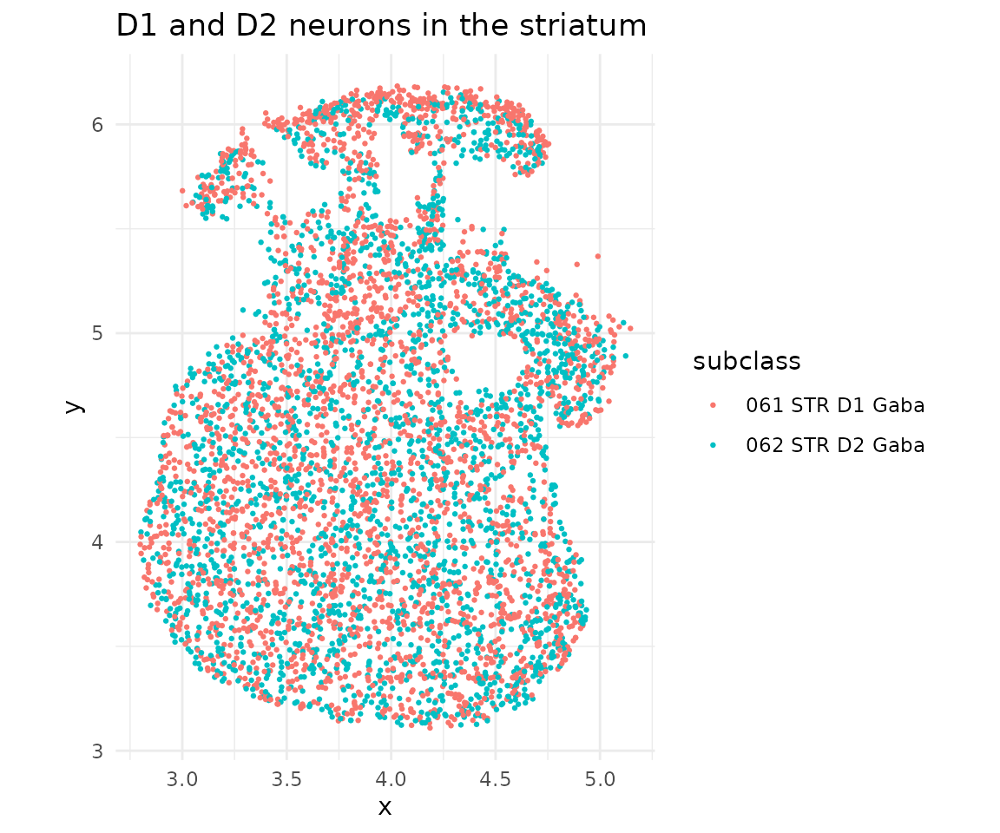
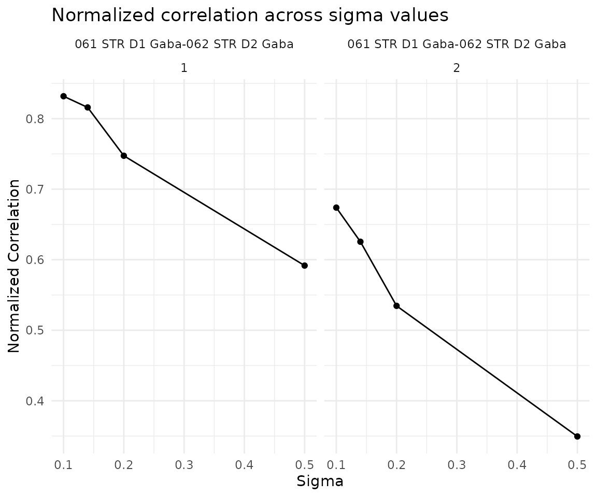
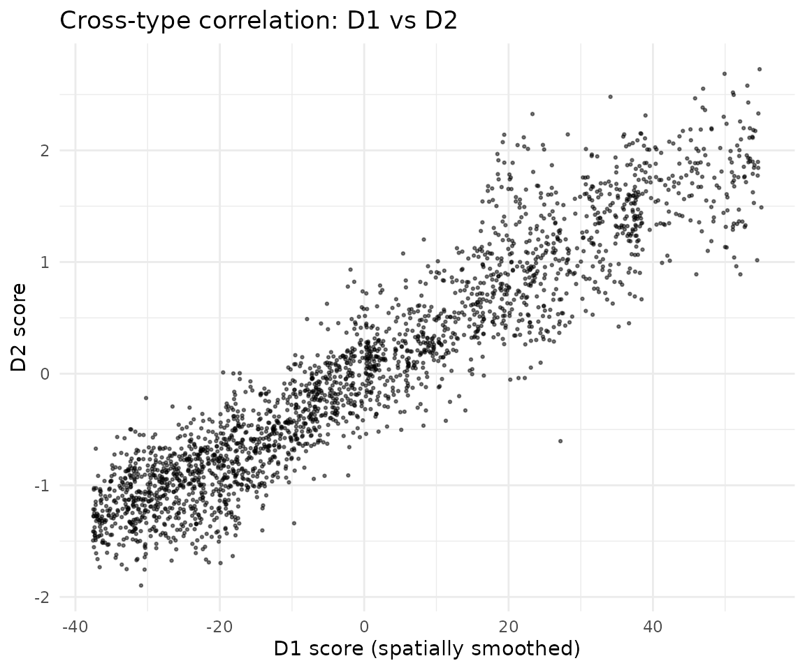
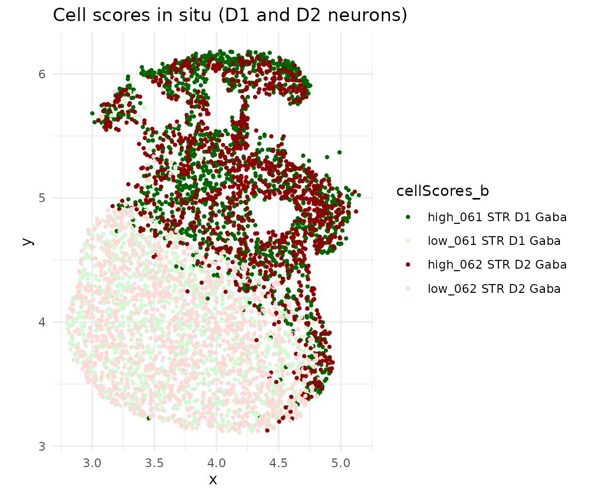
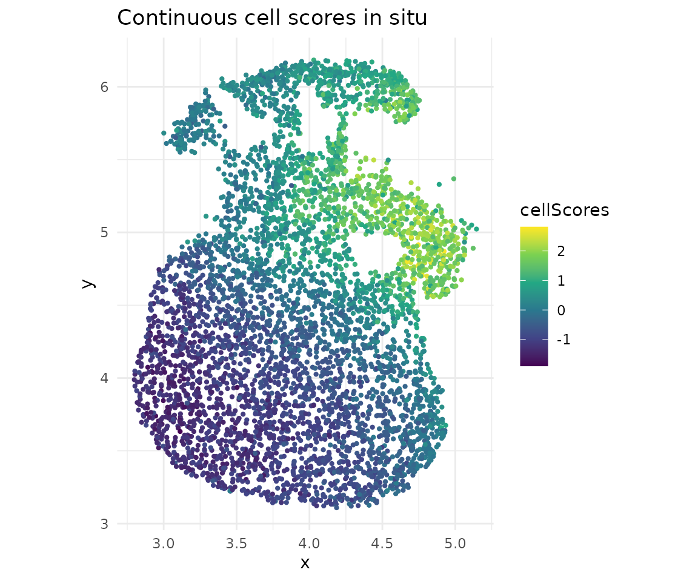

Cross-cell-type co-progression (Brain MERFISH)
2026-04-15
Source:vignettes/brain_merfish_two_type.Rmd
brain_merfish_two_type.RmdOverview
This vignette demonstrates cross-cell-type co-progression using brain MERFISH data from Zhang et al. Nature 2023. We analyze D1 and D2 GABAergic neurons in the striatum, detecting coordinated spatial gene expression patterns between these two cell populations.
Download and load data
data_path <- copro_download_data("brain_merfish")## Downloading copro_brain_merfish.rds from GitHub Release 'data-v1'...## Downloaded to: /home/runner/.cache/R/CoPro/copro_brain_merfish.rds
dat <- readRDS(data_path)Visualize spatial layout
ggplot(dat$metaData) +
geom_point(aes(x = x, y = y, color = subclass), size = 0.5) +
coord_fixed() +
theme_minimal() +
ggtitle("D1 and D2 neurons in the striatum")
Create CoPro object and run pipeline
cell_types <- c("061 STR D1 Gaba", "062 STR D2 Gaba")
obj <- newCoProSingle(
normalizedData = dat$normalizedData,
locationData = dat$locationData,
metaData = dat$metaData,
cellTypes = dat$cellTypes
)
obj <- subsetData(obj, cellTypesOfInterest = cell_types)
# Core pipeline
obj <- computePCA(obj, nPCA = 40, center = TRUE, scale. = TRUE)## Input is dense (matrixarray), performing irlba pca...
## Input is dense (matrixarray), performing irlba pca...
obj <- computeDistance(obj, distType = "Euclidean2D",
normalizeDistance = FALSE)## 0% 25% 50% 75% 100%
## 0.03333036 0.77980408 1.21734420 1.70564639 3.10426158
obj <- computeKernelMatrix(obj, sigmaValues = c(0.1, 0.14, 0.2, 0.5))## Computing pairwise kernel matrix for 2 cell types
## current sigma value is 0.1
## current sigma value is 0.14
## current sigma value is 0.2
## current sigma value is 0.5
obj <- runSkrCCA(obj, scalePCs = TRUE, maxIter = 500)## Running skrCCA for sigma = 0.1## [1] "Convergence reached at 26 iterations (Max diff = 7.515e-06 )"
## [1] "Convergence reached at 1 iterations (Max diff = 1.233e-14 )"## Running skrCCA for sigma = 0.14## [1] "Convergence reached at 20 iterations (Max diff = 9.619e-06 )"
## [1] "Convergence reached at 1 iterations (Max diff = 1.665e-16 )"## Running skrCCA for sigma = 0.2## [1] "Convergence reached at 14 iterations (Max diff = 9.461e-06 )"
## [1] "Convergence reached at 1 iterations (Max diff = 3.886e-16 )"## Running skrCCA for sigma = 0.5## [1] "Convergence reached at 13 iterations (Max diff = 7.491e-06 )"
## [1] "Convergence reached at 0 iterations (Max diff = 2.949e-15 )"## Optimization succeeded for 4 sigma value(s): sigma_0.1, sigma_0.14, sigma_0.2, sigma_0.5
obj <- computeNormalizedCorrelation(obj)## Calculating spectral norms, depending on the data size, this may take a while.
## Finished calculating spectral norms
obj <- computeGeneAndCellScores(obj)Select optimal sigma
ncorr <- getNormCorr(obj)
ggplot(ncorr, aes(x = sigmaValues, y = normalizedCorrelation)) +
geom_point() +
geom_line() +
facet_wrap(~ ct12 + CC_index) +
xlab("Sigma") +
ylab("Normalized Correlation") +
ggtitle("Normalized correlation across sigma values") +
theme_minimal()
Cross-type correlation
Visualize how cell scores in D1 neurons (smoothed by the spatial kernel) correlate with D2 neuron scores:
df_corr <- getCorrTwoTypes(obj,
sigmaValueChoice = 0.14,
cellTypeA = "061 STR D1 Gaba",
cellTypeB = "062 STR D2 Gaba"
)
ggplot(df_corr) +
geom_point(aes(x = AK, y = B), size = 0.5, alpha = 0.5) +
xlab("D1 score (spatially smoothed)") +
ylab("D2 score") +
ggtitle("Cross-type correlation: D1 vs D2") +
theme_minimal()
In situ visualization
cs <- getCellScoresInSitu(obj, sigmaValueChoice = 0.14)
ggplot(cs) +
geom_point(aes(x = x, y = y, color = cellScores_b), size = 0.8) +
scale_color_manual(values = c("darkgreen", "#d4f8d4",
"darkred", "#ffd8d8")) +
coord_fixed() +
ggtitle("Cell scores in situ (D1 and D2 neurons)") +
theme_minimal()
# Continuous scores
ggplot(cs) +
geom_point(aes(x = x, y = y, color = cellScores), size = 0.8) +
scale_color_viridis_c() +
coord_fixed() +
ggtitle("Continuous cell scores in situ") +
theme_minimal()
Permutation test
Establish statistical significance with spatial permutations:
obj <- runSkrCCAPermu(obj, nPermu = 5L, permu_method = "bin",
num_bins_x = 10, num_bins_y = 10)## Warning in runSkrCCAPermu(obj, nPermu = 5L, permu_method = "bin", num_bins_x =
## 10, : nPermu < 10 may give unreliable p-values. Consider nPermu >= 100.## Permutation settings:
## permu_method: bin
## permu_which: second_only
## -> Cell type 061 STR D1 Gaba is FIXED, others are permuted
## num_bins_x: 10
## num_bins_y: 10
## Total bins: 100
## match_quantile: FALSE
##
## Generating cell permutation indices...
## Cell permutation indices generated.
##
## Running CCA optimization for 5 permutations...
## [1] "Convergence reached at 23 iterations (Max diff = 7.942e-06 )"
## [1] "Convergence reached at 1 iterations (Max diff = 3.662e-13 )"
## [1] "Convergence reached at 15 iterations (Max diff = 7.143e-06 )"
## [1] "Convergence reached at 1 iterations (Max diff = 7.903e-15 )"
## [1] "Convergence reached at 19 iterations (Max diff = 5.864e-06 )"
## [1] "Convergence reached at 1 iterations (Max diff = 1.582e-11 )"
## [1] "Convergence reached at 14 iterations (Max diff = 4.520e-06 )"
## [1] "Convergence reached at 0 iterations (Max diff = 1.848e-10 )"
## [1] "Convergence reached at 8 iterations (Max diff = 4.634e-06 )"
## [1] "Convergence reached at 0 iterations (Max diff = 4.876e-11 )"
## Completed 5 of 5 permutations
##
## Permutation testing complete.
## Run computeNormalizedCorrelationPermu() to compute p-values.
obj <- computeNormalizedCorrelationPermu(obj, tol = 1e-3)## Calculating spectral norms...
## Spectral norms calculated.
##
## Computing normalized correlations for permutations...
## Completed 5 of 5 permutations
##
## Normalized correlation computation complete.## sigmaValues cellType1 cellType2 CC_index
## permu_1.1 0.1 061 STR D1 Gaba 062 STR D2 Gaba 1
## permu_1.2 0.1 061 STR D1 Gaba 062 STR D2 Gaba 2
## permu_2.1 0.1 061 STR D1 Gaba 062 STR D2 Gaba 1
## permu_2.2 0.1 061 STR D1 Gaba 062 STR D2 Gaba 2
## permu_3.1 0.1 061 STR D1 Gaba 062 STR D2 Gaba 1
## permu_3.2 0.1 061 STR D1 Gaba 062 STR D2 Gaba 2
## permu_4.1 0.1 061 STR D1 Gaba 062 STR D2 Gaba 1
## permu_4.2 0.1 061 STR D1 Gaba 062 STR D2 Gaba 2
## permu_5.1 0.1 061 STR D1 Gaba 062 STR D2 Gaba 1
## permu_5.2 0.1 061 STR D1 Gaba 062 STR D2 Gaba 2
## normalizedCorrelation
## permu_1.1 0.2691072
## permu_1.2 0.2106740
## permu_2.1 0.2511427
## permu_2.2 0.2057824
## permu_3.1 0.2402538
## permu_3.2 0.1765175
## permu_4.1 0.2841232
## permu_4.2 0.1786754
## permu_5.1 0.3707562
## permu_5.2 0.1871863References
Zhang, M., Pan, X., Jung, W. et al. Molecularly defined and spatially resolved cell atlas of the whole mouse brain. Nature 624, 343–354 (2023). https://doi.org/10.1038/s41586-023-06808-9
Session info
## R version 4.5.3 (2026-03-11)
## Platform: x86_64-pc-linux-gnu
## Running under: Ubuntu 24.04.4 LTS
##
## Matrix products: default
## BLAS: /usr/lib/x86_64-linux-gnu/openblas-pthread/libblas.so.3
## LAPACK: /usr/lib/x86_64-linux-gnu/openblas-pthread/libopenblasp-r0.3.26.so; LAPACK version 3.12.0
##
## locale:
## [1] LC_CTYPE=C.UTF-8 LC_NUMERIC=C LC_TIME=C.UTF-8
## [4] LC_COLLATE=C.UTF-8 LC_MONETARY=C.UTF-8 LC_MESSAGES=C.UTF-8
## [7] LC_PAPER=C.UTF-8 LC_NAME=C LC_ADDRESS=C
## [10] LC_TELEPHONE=C LC_MEASUREMENT=C.UTF-8 LC_IDENTIFICATION=C
##
## time zone: UTC
## tzcode source: system (glibc)
##
## attached base packages:
## [1] stats graphics grDevices utils datasets methods base
##
## other attached packages:
## [1] ggplot2_4.0.2 CoPro_0.6.1
##
## loaded via a namespace (and not attached):
## [1] rappdirs_0.3.4 sass_0.4.10 generics_0.1.4 lattice_0.22-9
## [5] digest_0.6.39 magrittr_2.0.5 timechange_0.4.0 evaluate_1.0.5
## [9] grid_4.5.3 RColorBrewer_1.1-3 fastmap_1.2.0 maps_3.4.3
## [13] jsonlite_2.0.0 Matrix_1.7-4 httr_1.4.8 spam_2.11-3
## [17] viridisLite_0.4.3 scales_1.4.0 httr2_1.2.2 textshaping_1.0.5
## [21] jquerylib_0.1.4 cli_3.6.6 rlang_1.2.0 gitcreds_0.1.2
## [25] withr_3.0.2 cachem_1.1.0 yaml_2.3.12 tools_4.5.3
## [29] parallel_4.5.3 memoise_2.0.1 dplyr_1.2.1 curl_7.0.0
## [33] vctrs_0.7.3 R6_2.6.1 lubridate_1.9.5 matrixStats_1.5.0
## [37] lifecycle_1.0.5 fs_2.0.1 ragg_1.5.2 irlba_2.3.7
## [41] pkgconfig_2.0.3 desc_1.4.3 pkgdown_2.2.0 pillar_1.11.1
## [45] bslib_0.10.0 gtable_0.3.6 glue_1.8.0 gh_1.5.0
## [49] Rcpp_1.1.1-1 fields_17.1 systemfonts_1.3.2 xfun_0.57
## [53] tibble_3.3.1 tidyselect_1.2.1 knitr_1.51 farver_2.1.2
## [57] htmltools_0.5.9 labeling_0.4.3 rmarkdown_2.31 piggyback_0.1.5
## [61] dotCall64_1.2 compiler_4.5.3 S7_0.2.1-1